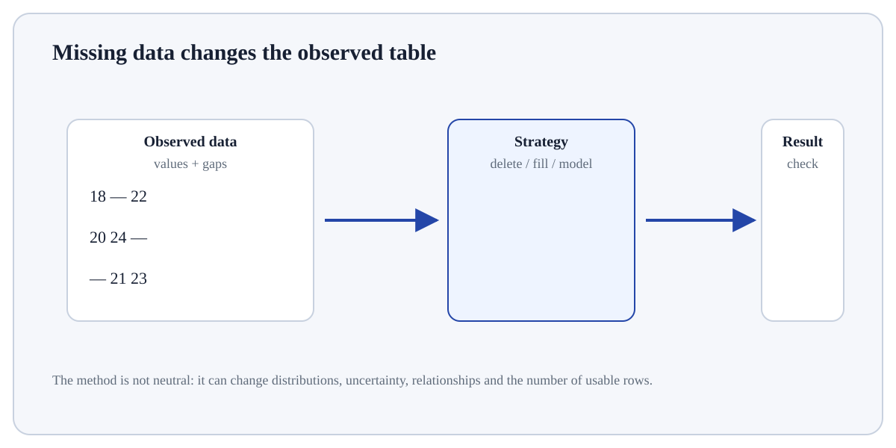

Follow the transformation
Create an ndarray and inspect shape, ndim and dtype.
Select values with indexing, slicing or boolean masks.
Apply vectorised arithmetic; broadcasting aligns compatible dimensions.
NaN and Missing Numeric Values is part of NumPy's array model.
NaN and Missing Numeric Values is part of NumPy's array model. An ndarray stores homogeneous values in an n-dimensional shape and enables vectorised operations that act over many elements without writing an explicit Python loop for each value.
NaN and Missing Numeric Values matters because NumPy represents numerical data as shaped arrays and performs operations across whole axes efficiently. Shape, dtype, broadcasting and reduction rules directly determine whether a numerical result means what you think it means.
Treat this as a sequence of observable decisions rather than one opaque command. Stage 1: Create an ndarray and inspect shape, ndim and dtype. Stage 2: Select values with indexing, slicing or boolean masks. Stage 3: Apply vectorised arithmetic; broadcasting aligns compatible dimensions. Final checkpoint: Treat NaN deliberately because many aggregations either propagate it or require nan-aware functions.
Create an ndarray and inspect shape, ndim and dtype.
Select values with indexing, slicing or boolean masks.
Apply vectorised arithmetic; broadcasting aligns compatible dimensions.

Create an ndarray and inspect shape, ndim and dtype. For NaN and Missing Numeric Values, make this checkpoint explicit by recording the evidence inspected, the expected result, and the condition that would make you reject the current result.
# Step 1 — Import the module so its functions/classes are available to the rest of this example.
import numpy as np
# Step 2 — Construct `X` as an array so vectorised numerical operations can be applied consistently.
X = np.array([[1., 2., 3.], [4., 5., 6.]])
# Step 3 — Compute the right-hand expression and store its result in `centre` for the next step.
centre = X.mean(axis=0)
# Step 4 — Compute the right-hand expression and store its result in `Xc` for the next step.
Xc = X - centre # broadcasting over rows
# Step 5 — Display the current value explicitly so the result/state can be inspected during execution.
print("shape:", X.shape)
# Step 6 — Display the current value explicitly so the result/state can be inspected during execution.
print("column means:", centre)
# Step 7 — Display the current value explicitly so the result/state can be inspected during execution.
print("centred:\n", Xc)shape: (2, 3) column means: [2.5 3.5 4.5] centred: [[-1.5 -1.5 -1.5] [ 1.5 1.5 1.5]]
For NaN and Missing Numeric Values, connect the displayed result to the specific input and mechanism above; independently verify one value/state change rather than treating successful execution as proof.
Python listGeneral-purpose heterogeneous container.NumPy ndarrayHomogeneous n-D numerical array with vectorised operations.BroadcastingImplicitly expands size-1/missing dimensions when shapes are compatible.ReshapeChanges the array view/shape without changing element count.Use NaN and Missing Numeric Values when the task benefits from homogeneous n-dimensional arrays, vectorised numerical operations or explicit shape/dtype semantics.
Pause when shapes are unclear, dtypes would lose information, broadcasting is accidental, or labelled/tabular semantics would be safer in pandas.
Build a tiny, inspectable example of NaN and Missing Numeric Values. First create an ndarray and inspect shape, ndim and dtype. Then select values with indexing, slicing or boolean masks. Write the expected result before running it, and explain one condition that would make the result misleading or invalid.
Before trusting a result from NaN and Missing Numeric Values, which check provides the strongest evidence that you understand and applied it correctly?
Step 1Create an ndarray and inspect shape, ndim and dtype.Step 2Select values with indexing, slicing or boolean masks.Step 3Apply vectorised arithmetic; broadcasting aligns compatible dimensions.Step 4Reshape only when the number of elements remains consistent.